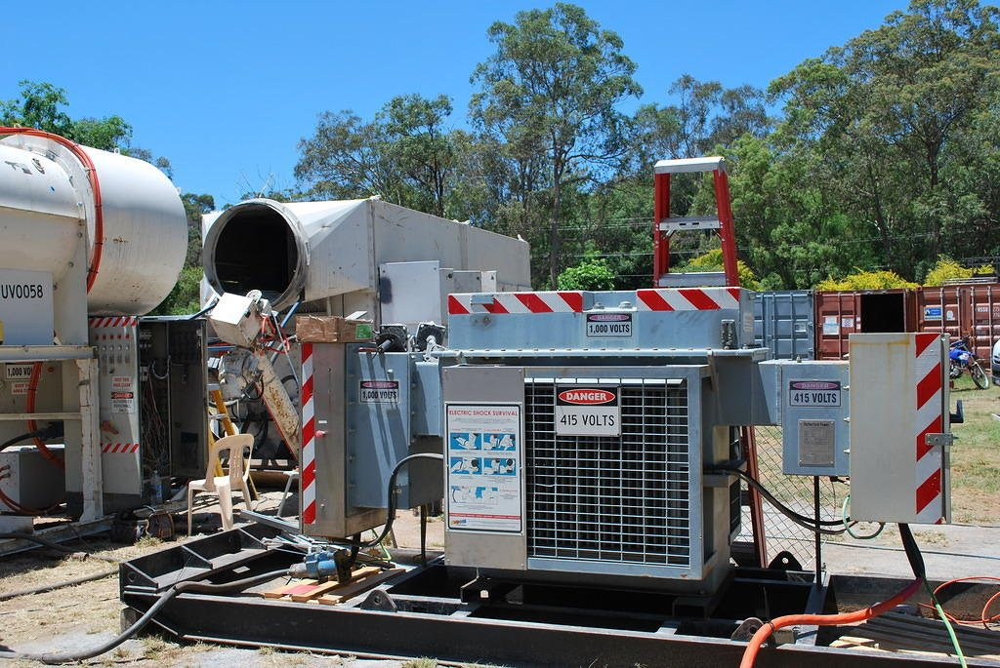

Mining
Underground and open-pit equipment, designed, refurbished and installed.
What we do here
Our work in this sector
- 11 kV, 1000 V and 415 V tunnelling and mining equipment
- Mine winders and conveyor systems
- Soft starters, variable speed drives and switchgear
- Robbins tunnel boring machine assembly
- Fibre for underground metalliferous and open-pit coal sites
Where we have done itRedpath projects at Prospect NSW, in Malaysia and in Georgia; a Robbins TBM assembled for Anglo Coal at Moura; fibre at Weipa.

Services
Services used in this sector
ServiceHigh voltageNationally accredited HV cable jointers, experienced up to and including 33 kV, and HV commissioning technicians equipped for cable fault location and protection systems.→ServiceTunnelling and infrastructureElectrical work for tunnel construction, and assembly and maintenance of the machines that do the digging.→ServiceIndustrialFor mining, civil, engineering and construction clients, at every stage from electrical design to installation and 24/7 maintenance.→ServiceFibre optics and dataNationally accredited fibre and communications technicians, for single-mode and multi-mode installation and testing.→
Projects
Projects in this sector


Talk to the people who will do the work.
One number for every branch, answered day and night.